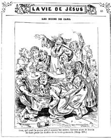
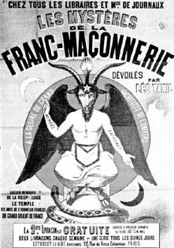
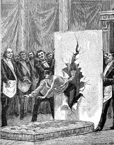

13 Nisan 1897 güncesinden
Simonini öfkeden kudurmuş durumda evine –ve Dalla Piccola'nınkine– kimin girdiğini anlamaya çalışıyordu. Seksenli yılların başından bu yana –Madame Lamessine gibi Beaune Sokağı'ndaki kitapçıda karşılaşmış olduğu– Juliette Adam'ın salonuna devam etmeye başladığını; burada Juliana Dimitriyevna Glinka ile tanıştığını ve onun aracılığıyla da Raçkovsi ile bağlantı kurduğunu hatırladı. Eğer evine –ya da Dalla Piccola'nınkine– burnunu sokan biri olduysa, mutlaka bu ikisinden birinin hesabına çalışıyor olmalıydı; hatırladığına göre bu ikisi define avında çekişen iki isim gibiydiler. Ama o zamandan beri son derece olaylı on beş yıl geçmişti. Ne zamandan beri peşindeydi Ruslar?
Yoksa masonlar mıydı? Onları huzursuz edecek bir şey yapmış olmalıydı; belki de evinde onlara ilişkin tehlikeli bir belge arıyorlardı. O yıllarda masonik çevreyle temas kurmaya çalışıyordu; bunu hem Osman Bey'i memnun etmek hem de ensesinden ayrılmayan ve Roma'da masonlara (ve onların esin perisi Yahudilere) karşı bir cephe saldırısının başlamak üzere olduğunu ve bu nedenle taze malzemeye gerek duyduklarını bildiren Peder Bergamaschi için yapıyordu. Malzeme olmadığı belliydi, çünkü Cizvitlerin dergisi Civiltà Cattolica dede Simonini'nin Barruel'e yazdığı ve üç yıl önce Contemporain dergisinde yayımlanan mektubu bir kez daha yayımlamak zorunda kalmıştı.
Simonini her şeyi yeni baştan gözden geçiriyordu: O dönemde bir locaya dahil olmanın onun için gerçekten uygun olup olmayacağını düşünüyordu. Birtakım kurallara uymak, toplantılara katılmak, biraderlerinin ricalarını yerine getirmek zorunda kalacaktı. Bütün bunlar hareket özgürlüğünü kısıtlayacaktı. Öte yandan bir locanın onu kabul etmek için güncel yaşantısı ve geçmişi hakkında araştırma yapması gerekeceği belliydi ve buna izin vermemesi gerekirdi. Belki de bir iki masona şantaj yaparak onları muhbir olarak kullanmak daha iyi olurdu. Şans eseri son derece önemli sayısız düzmece vasiyet yazmış bir noter olarak yolunun yüksek dereceli masonlarla kesişmiş olması gerekirdi.
Hem sonra açıkça şantaj yapmak şart değildi. Simonini birkaç yıldan bu yana mouchard'lıktan uluslararası casus konumuna geçmenin ona kesinlikle bir şeyler kazandırdığına ama gene de ihtirasları için yeterli olmadığına kanaat getirmişti. Casusluk yapmak onu handiyse gizli bir yaşantı tarzına zorunlu kılarken o ilerleyen yaşıyla daha varlıklı ve onurlu bir sosyal hayatın özlemini çekiyordu. Bu nedenle gerçek arzusunu belirlemişti: Casus olmak değil, çevresinin onun casus olduğunu düşünmesini sağlamak istiyordu; üstelik bu casus farklı kapılar için çalışıyor görünmeli; kimse onun kim için bilgi topladığını, elinde ne çok istihbarat olduğunu bilmemeliydi.
Casus sanılmak çok kârlıydı, çünkü herkes değer biçilemez sandığı sırlarını ondan gizlemeye çalışırken ağzından itiraf alabilmek için bol keseden harcamaya hazır oluyordu. Ama insanlar sırlarının ortaya çıkmasını istemedikleri için onun noterlik işini bahane ediyorlar, gösterişli bir yazısı için göz kırpmadan kesenin ağzını açıyorlar ve dikkatinizi çekerim, sıradan bir noterlik işlemi için bol para ödemekle kalmıyorlar, karşılığında da hiçbir bilgi edinemiyorlardı. Onu satın aldıklarını sanıyorlar ama ufak tefek haberler sızdıracağız diye sabırla bekliyorlardı.
Anlatıcı, Simonini'nin yeni dönemin de önünde hareket ettiğini düşünüyor: Özgür basının, telgraf ve artık pek yakın olan radyo benzeri pek çok haberleşme sisteminin yaygınlaşmasıyla haberlerin gizli kalması ender görülen bir durum oluyordu ve bu da ajanlık mesleğinde bir kriz yaratabilirdi. En iyisi hiçbir sırra sahip olmamak ama varmış gibi davranmaktı. Sanki rantiye yaşıyor ya da bir patentin gelirinin tadını çıkartıyordu: Yan gelip yatıyorsun, ötekiler senden sarsıcı açıklamalar aldıkları palavrasını sıkıyorlar, şöhretin katlanıyor, paralar dökülüyor.
Bağlantı kurmak için, doğrudan şantaj yapılmasa da şantajdan korkacak birini bulmalıydı; kim olabilirdi bu? Aklına gelen ilk ad Taxil oldu. Kime ve kimden olduğunu hatırlamadığı bazı mektupları kaleme aldığında tanışmışlardı ve Taxil Le Temple des amis de l'honneur français locasına kabul edildiği için kibirleniyordu. Acaba o doğru kişi miydi? Yanlış adım atmak istemediği için bilgi almak amacıyla Hébuterne'e gitti. Yeni danışmanı Lagrange'ın tersine randevu yerini hiç değiştirmiyordu: Daima Notre Dame Kilisesi'nin ana sahanlığının dibinde oluyordu.
Simonini ona gizli servislerin Taxil hakkındaki görüşlerini sordu. Hébuterne gülmeye başladı: "Genellikle biz sizden bilgi isteriz, tersi olmaz. Bu kez şaşırdım. Bu ad bana bir şeyler çağrıştırıyor ama gizli servisi değil, jandarmayı ilgilendiren konular bunlar. Birkaç gün sonra ararım sizi."
Rapor hafta sonuna doğru geldi ve kesinlikle çok ilginçti. Léo Taxil diye tanınan Marie Joseph Gabriel Antoine Jogand-Pagès, 1854 yılında Marsilya'da doğmuştu, Cizvit okulunda eğitim görmüş ve bunun doğal bir sonucu olarak on sekiz yaşlarında kilise karşıtı gazetelerle işbirliği yapmaya başlamıştı. Marsilya'da kötü kadınlarla ilişki kuruyordu; bunlardan biri olan fahişe sonradan ev sahibesini öldürdüğü için on iki yıllık ağır hapse mahkûm olmuş, bir başkası da sevgilisini öldürme suçundan tutuklanmıştı. Polisin onu bu gelip geçici tanışıklıklarla suçlaması da tuhaftı, çünkü Taxil ilişki kurduğu Cumhuriyetçi ortamlarla ilgili bilgiler sağlamak suretiyle adalete de hizmet vermişti. Öte yandan polisin ondan utanıyor olma olasılığı da vardı, çünkü bir keresinde aslında afrodizyak hap olan Caramelle del Serraglio (Saray şekerlemesi) reklamını yaptığı için ihbar edilmişti. Daha Marsilya'dayken, 1873 yılında yerel gazetelere bir dizi mektup yollamıştı; hepsinde sahte balıkçı imzaları vardı ve limanı köpekbalıklarının sardığı, alarma geçilmesi gerektiği bildiriliyordu. Sonradan din karşıtı makaleler yüzünden mahkûm edilince Cenevre'ye kaçmıştı. Burada, Leman Gölü'nün dibinde bir Roma şehri kalıntısı olduğuna ilişkin haberler yaymış, turist akınına yol açmıştı. Düzmece ve kötü amaçlı haber yayma suçuyla İsviçre'den kovulunca önce Montpellier'e, sonra da Paris'e yerleşerek Écoles Sokağı'nda Librairie Anticléricale'i (Kilise Karşıtı Kitaplık) açmıştı. Yakın geçmişte bir mason locasına girdiyse de uygunsuzluğu yüzünden kovulmuştu. Görünüşe göre kilise karşıtı çalışmalar artık pek para getirmiyordu ve şimdi borç batağındaydı.
Simonini şimdi Taxil hakkında her şeyi hatırlamaya başlamıştı. Katolik Kilisesi karşıtı olmanın yanı sıra ciddi olarak din karşıtı olan bir dizi kitap yazan Taxil, bu kitaplarından biri olan İsa'nın Hayatı'nda son derece saygısız çizimler kullanmıştı (söz gelişi Meryem Ana ile Kutsal Ruh'un güvercini arasında ilişki olduğunu ima etmişti). Yazdığı son derece kötümser roman Cizvitin Oğlu ise yazarın nasıl bir şarlatan olduğunun kanıtıydı; ilk sayfada ("babam gibi sevdiğim") Giuseppe Garibaldi'ye bir ithaf vardı ve buraya kadar söylenecek bir şey yoktu ama ilk sayfada Giuseppe Garibaldi'nin kaleme aldığı bir "Sunuş" yazısı bulunuyordu. Sunuşun başlığı "Kilise karşıtı düşünceler", içeriği ise öfkeli bir sövgüden başka bir şey değildi ("karşıma bir rahip geldiğinde, bu hele de bir Cizvit ise rahibin özü, doğasının bütün iğrençliği beni altüst edecek kadar ürpertir, mide bulantıları yaratır") ve ayrıca sözde sunuşunu yaptığı yapıta ilişkin tek söz etmiyordu – belli ki Taxil bu metni herhangi bir yerden yürütmüş ve sanki kendi kitabı için yazılmışçasına alıntılamıştı.

...bu kitaplarından biri olan İsa'nın Hayatı'nda son derece saygısız çizimler kullanmıştı (söz gelişi Meryem Ana ile Kutsal Ruh'un güvercini arasında ilişki olduğunu ima etmişti).
Simonini bu tarz bir insan yüzünden kendini tehlikeye atmak istememişti. Kendini Noter Fournier olarak takdim etmeye karar vererek başına rengi kestaneyi andıran güzel bir peruk oturtmuş, yandan ayırarak güzelce taramıştı. Eklediği aynı renk iki favoriyle incelttiği yüzüne uygun bir kremle solgun bir renk vermişti. Ayna karşısında çalışarak yüzüne şaşkın bir ifade oturtmuş, iki altın köpek dişini ortaya çıkartacak bir gülümseme uydurmuştu – dişçilerin şaheser çalışması sonucunda gerçek dişlerine altın kılıf takıyordu. Ayrıca dişlerine eklediği bir protezle telaffuzu bozuluyor ve hatta sesi değişiyordu.
Bu arada havalı posta aracılığıyla adamına bir petit bleu göndermiş ve onu ertesi gün Café Riche'e davet etmişti. Tanışmak için iyi bir yöntemdi bu, çünkü o kafeden pek çok önemli kişi gelip geçmişti ve aşçısının dil balığının ya da çulluk etinin karşısında kibre meyilli bir parvenu asla dayanamazdı.
Léo Taxil'in tombul ve yağlı bir yüzü, gür bir bıyığı vardı; geniş alnının üzerinde uzanan kel başı sürekli terliyordu; şıklığı biraz abartılıydı, yüksek sesle ve dayanılmaz bir Marsilya aksanıyla konuşuyordu.
Noter Fournier'nin kendisiyle konuşmak istemesindeki nedeni pek anlayamıyordu ama yavaş yavaş umutlanarak karşısındakinin, romancıların o zamanlar "filozof" diye nitelendirdiği ve insan doğasını çözümlemeye meraklı, kendisinin kilise karşıtı polemiklerine ve kişisel deneyimlerine ilgi duyan bir kişi olduğunu düşünmeye başlamıştı. Dolu ağzıyla gençlik serüvenlerini anlatırken pek coşmuştu: "Marsilya'da köpekbalığı masalını yaydığım zaman Katalanya'dan Prado kıyılarına kadar bütün plaj işletmecileri birkaç hafta işsiz kaldılar; belediye başkanı köpekbalıklarının füme et artıklarını denize bırakan bir geminin peşinden Korsika'dan gelmiş olabileceklerini bildirdi; Belediye Encümeni kılavuz tekne ile bir chassepots şirketini davet edince, gerçekten de General Espivent idaresinde yüz kişi çıkageldi! Ya Cenevre Gölü öyküsü? Avrupa'nın dört bir yanından muhabirler koştular. Batık kentin De bello gallico döneminde inşa edilmiş olduğu, çünkü o zamanlar Rhône Nehri'nin gölün sularını dalgalandırmadan karşıdan karşıya geçebildiği söylentileri yayıldı. Yerel sandalcılar turistleri gölün ortasına götürerek, dibi görmek için suyun üzerine zeytinyağı atarak paralar kazandılar... Ünlü bir Leh arkeolog dipte kesişen yollar ve bir at heykeli gördüğünü iddia etti! İnsanların en belli başlı niteliği her şeye inanmaya hazır oluşudur. Öyle olmasa kilise iki bin yıldır inanılırlığını koruyabilir ve ayakta kalabilir miydi?"
Simonini ona Le Temple des amis de l'honneur français'yi danışmıştı.
"Bir locaya girmek zor mudur?" diye sormuştu.
"Ekonomik koşulların iyi olması ve pek tuzlu olan aidatların ödenebilmesi yeterlidir. Ayrıca biraderlerin karşılıklı birbirlerini kollama anlaşmasına uymak gerekli. Ahlaka gelince, bundan çok söz edilir ama daha geçen sene Ritler Büyük Koleji hatibinin Chaussée-d'Antin Sokağı'ndaki bir genelevin sahibi olduğu, Paris'te Otuz Üçler'in en etkinlerinden biri olan Hébuterne adındaki şahsın, casusluk yaptığı daha doğrusu bir casusluk ofisinin şefi olduğu ortaya çıktı."
"Peki, kabul nasıl oluyor?"
"Ritüeller var! Bir bilseniz! Sürekli sözünü ettikleri bu Evrenin Ulu Mimarı'na inanıyorlar mı bilmem ama liturjilerini pek ciddiye alıyorlar. Çıraklığa kabul edilmek için ne yaptığımı bir bilseniz!"
Ve Taxil, sözün burasında insanın saçlarını dimdik eden öyküler anlatmaya başladı.
Simonini, tescilli yalancı Taxil'in palavralar atıp atmadığından emin değildi. Bir üyenin son derece gizli tutması gereken bilgileri böyle açığa vurmasının, bütün ritüeli alaycı bir dille anlatmasının doğru olup olmadığını sordu. Taxil umursamazlıkla yanıt verdi: "Ah biliyor musunuz, artık kimseye karşı sorumluluğum yok. Beni ihraç etti o sersemler."
Anlaşıldığı üzere elini şimdi de Montpellier'de yayımlanan yeni bir gazetenin hamuruna sokmuştu; Le Midi Républicain ilk sayısında aralarında Victor Hugo ve Louis Blanc gibi önemli kişilerin de bulunduğu pek çok kişinin dayanışma ve yüreklendirme mesajını yayımlamıştı. Sonra birdenbire, imza sahibi olduğu iddia edilen bütün bu kişiler masonik esinler taşıyan başka gazetelere mektuplar yollayarak asla böyle bir destek vermediklerini ve adlarının böyle yakışıksızca kullanılmasından rahatsız olduklarını dile getirdiler. Bunu, locadaki pek çok yargılama izlemişti; Taxil kendini iki şekilde savunmuştu. İlk olarak bu mektupların özgün hallerini göstermiş, ikinci olarak da bu şöhretli ama artık ihtiyarlamış kişinin yaşlılık çöküşüyle böyle davrandığını söylemişti – böylece ilk konuşmayı onura, vatana ve Farmasonluğa kabul edilemez bir leke atarak tamamlamıştı.
İşte Simonini şimdi Simonini kişiliğiyle Hugo ve Blanc adına iki mektup yazdığını anımsıyordu. Belli ki Taxil bu olayı unutmuştu: kendine dahi yalan söylemeye o kadar alışmıştı ki, bu mektuplardan söz ederken gerçekmişler gibi bakışları inançla parlıyordu. Ve Simonini diye bir noteri hayal meyal hatırlasa bile Noter Fournier ile onun arasında bir bağlantı kuramamıştı.
Önemli olan Taxil'in eski loca biraderlerine derin bir nefret duyuyor olmasıydı.
Simonini, Taxil'in anlatıcılık yeteneğini dürtüklerse Osman Bey için iğneleyici malzeme toparlayabileceğini hemen anlamıştı. Ama o pek coşkun zihninde yepyeni bir düşünce daha oluşuvermişti; başlangıçta bir izlenim, bir sezginin tomurcuğu gibi görünen bu fikir sonunda bütün ayrıntılarıyla tam bir plana dönüşmüştü.
Taxil'in boğazına düşkünlüğünü aşikâr ettiği ilk buluşmadan sonra sahte noter onu Clichy yakınlarında bulunan, poulet saute ve Caen usulü işkembe yahnisiyle –elbette mahzeniyle de– ile ün salmış popüler Père Lathuile lokantasına davet etmişti. Karşısındaki ağzını şapırdatırken, saygın bir ödeme karşılığında geçmişte kalan masonluğuyla ilgili anılarını kaleme almayı düşünüp düşünmediğini sordu. Ücret sözcüğünü duyan Taxil bu fikre hemen sıcak baktı. Simonini ona yeni bir randevu daha verdi ve hemen Peder Bergamaschi'ye koştu.
"İyi dinleyin beni Peder" demişti ona. "Elimizde nasır tutmuş bir kilise düşmanı var; kilise karşıtı kitaplarından artık para kazanamaz olmuş. Ayrıca mason dünyasını da tanıyor ve o dünyaya diş biliyor. Taxil'in Katolikliğe dönmesi, din karşıtı eylemlerini itiraf etmesi, mason dünyasının sırlarını ortaya dökmesi yeter; işte siz Cizvitler o zaman emrinizde inatçı bir propaganda uzmanı bulmuş olacaksınız."
"Ama insanlar sadece birisi söyledi diye din ve mezhep değiştirmezler."
"Bana kalırsa, Taxil için önemli olan tek şey para. Düzmece haber yayma konusundaki zevkini şöyle bir gıdıklamak onun döneklik etmesi için yeterli; gazetenin ilk sayfasını araladık mı tamam. Milletin diline düşmek için Efes'teki Diana tapınağını yakan şu Yunanlının adı neydi?"
"Erostratos. Evet, tabii" demişti Bergamaschi pek düşünceli bir şekilde. Ve eklemişti: "Hem Tanrı'nın yolları sonsuzdur..."
"Açıkça din değiştirmesi için ne kadar verebiliriz?"
"Samimi din değişimlerinin bedava olması gerektiği bir kez söylendiği için ad majorem Dei gloriam müşkülpesentlik etmemeliyiz. Ama ona elli bin franktan fazlasını önerme. Az olduğunu söyleyecektir ama bir yandan ruhunun da kazandığını söyle ve bunun bedeli olamayacağını belirt; öte yandan masonluk karşıtı kitaplar yazdığında bizim dağıtımımızdan yararlanacak ve kitaplarının yüz binlerce baskı yapması mümkün olacak."
Simonini işin sonuçlanabileceğinden emin değildi ve bu nedenle önlem olarak Hébuterne'e gitmiş ve Taxil'i mason düşmanı yapmak konusunda Cizvitlerin bir komplo hazırladığını duyurmuştu.
"Bu doğru olsa bile" demişti Hébuterne, "benim görüşlerim arada sırada Cizvitlerinkiyle uyuşur. Görüyorsunuz Simonini, size tek ve gerçek mason derneği olan, laik ve Cumhuriyetçi Büyük Doğu'nun üstatlarından biri olarak konuşuyorum; derneğimiz kilise karşıtı olsa bile din karşıtı değildir, çünkü Evrenin Ulu Mimarı'na inanır – her birey ona Hıristiyan tanrısı ya da belirsiz bir kozmik güç olarak bakmakta özgürdür. Taxil denen o namussuz ihraç edilmiş bile olsa ortamımızda bulunmuş olması bizi hâlâ utandırıyor. Öte yandan bir döneğin masonluk hakkında kimsenin inanamayacağı şeyler söylemesi bizi rahatsız etmez. Zaten Vatikan'dan bir saldırı bekliyoruz ve Papa'nın pek nazik davranmayacağını düşünüyoruz. Mason dünyası farklı itiraflarla lekelendi, Ragon gibi bir yazar daha çok yıllar önce 75 farklı masonluk uygulaması, 52 rit, 26 tanesi kadın erkek karışık olan 34 nizam ve 1400 rit derecesi olduğunu yazmıştı. Ayrıca tapınak ve İskoç masonluğu, Heredom riti, Swedenborg riti, dolandırıcı ve namussuz Cagliostro'nun kurduğu Memphis ve Mizraim ritleri, sonra Weishaupt'un 'Bilinmeyen Üstler'i, satanistler, Lusiferciler, Paladistler gibi sayarken benim bile başımı döndüren pek çok farklı adres var. Bunlar adımızı çok kötüye çıkartan farklı satanik ritler ve saygın biraderler de, ya estetik nedenlerle ye da bize verdikleri zararı bilmediklerinden onlara katıldılar. O da kısa süreliğine mason olmuş olabilir ama kırk yıl önce Proudhon, Lusifer'e şöyle bir dua kaleme almıştı: 'Gel ey rahipler ve krallarca iftiraya uğrayan Lusifer, bırak sarılayım sana ve sen kucakla beni'; Rapisardi adındaki o İtalyan, Prometheus efsanesinden yola çıkarak Lucifero kitabını yazdı; üstelik Rapisardi mason bile değildir ama Garibaldi gibi bir mason onu göklere çıkartmıştır ve masonlar şimdi Lucifero'ya kutsal kitap gözüyle bakmaya başlamışlardır. IX. Pius masonluğun her adımının arkasında şeytanın ayak izlerini bulmaktan vazgeçmemiştir; biraz Cumhuriyetçi, biraz monarşik, büyük lafebesi ve büyük mason İtalyan şairi Carducci demiryolunun bulunuşunu bile ondan bilerek İblis'e bir güzelleme kaleme almıştır. Carducci sonradan İblis'in bir metafor olduğunu dile getirmişse de İblis kültü bir kez daha herkese masonların baş eğlencesi gibi görünmüştür. Camiamızda, zamanın zaten gözden düşürdüğü bir kişinin, resmen masonluktan ihraç edildiğinde, dönekliği ortaya döküldüğünde, bizi şiddetle kötüleyen kitaplar yazmaya başlamasını pek önemsemeyiz. Vatikan'ın silahlarını köreltmek için de bir yol olabilir bu; onu pornografi yazarlarıyla aynı köşeye koyarız. Bir adamı cinayetle suçlayın, inanılabilirsiniz, Gilles de Rais gibi öğle ve akşam yemeklerinde bebekleri yemekle suçlayın, sizi ciddiye alan olmaz. Mason düşmanlığını feuilleton düzeyine düşürün; colportage konusu etmiş olursunuz. Evet işte, bizi çamura gömecek kişilere gereksinme duyuyoruz."
Hébuterne, üstün zekâlı olmanın yanı sıra kurnazlıkta da selefi Lagrange'dan üstündü. O anda Büyük Doğu'nun bu girişime ne kadar para yatırabileceğini söylemediyse de birkaç gün sonra ortaya çıktı: "Yüz bin frank. Ama yazacakları gerçekten süprüntü olsun."
Simonini böylece süprüntü satın alabilmek için yüz elli bin frangı cebine atmıştı. Taxil'e sonraki baskıları vaat ederek yetmiş beş bin verse, açlıktan ağzı kokan adam bunu havada kapardı. Yetmiş beş bin de Simonini'nin cebine kalırdı. Yüzde elli komisyon da fena sayılmazdı.
Taxil'e kimin adına öneride bulunacaktı? Vatikan adına mı? Noter Fournier'de Papa'nın tam yetkili elçisi havası yoktu. Olsa olsa, ona Peder Bergamaschi adında birinin ziyaretini haber verebilirdi; nihayetinde papazlar birilerinin din değiştirmesi ve bulanık geçmişiyle ilişkin itiraflarda bulunmasına yarardı.
Bulanık geçmiş demişken, Simonini, Peder Bergamaschi'ye güvenebilir miydi? Taxil'i Cizvitlerin eline bırakmamalıydı. Öyle ateist yazarlar görülmüştü ki her bir kitaptan yüzer kopya satarken, sunak masasının önünde diz çöküp nasıl imana geldiklerini anlattıklarında, her bir kitaptan iki bin, üç bin satmaya başlamışlardı. Zaten kilise karşıtı olanlar kent Cumhuriyetçileri arasında saygı görürlerdi ama köyler, kralı ve papazları özleyerek geçmişin anılarıyla yaşayan gericilerle doluydu ve okuma yazması olmayanlar (ama rahip onlar adına okuyabilirdi) bir kenara ayrılsa bile sayıları şeytanlar kadar çoktu. Peder Bergamaschi'yi işe karıştırmadan Taxil'e yeni kitapları için işbirliği önerilebilir, ona özel bir sözleşme imzalattırılarak onunla işbirliği yapanın gelecekteki yapıtlarından yüzde on ya da yirmi alacağı kabul ettirilebilirdi.
1884 yılında Taxil artık rahmete kavuşmuş bir Papa'nın adını lekeleyerek kaleme aldığı Gli Amor di Pio IX (IX. Pius'un Aşkları) ile iyi Katoliklere son darbeyi indirmişti. Aynı yıl tahtta oturan Papa XIII. Leone papalık genelgesi olarak "felsefi göreceliğin ve masonluk ahlakının kınanması" içerikli Humanum Genus'u yayımlamıştı. Quod Apostolici Muneris başlıklı papalık genelgesiyle sosyalistlerin ve komünistlerin korkunç hatalarını gözler önüne sermiş olan aynı Papa, şimdi doğrudan öğretilerinin bütünü içersinde mason toplumunu hedef almıştı ve üyelerin her birine suçla nasıl boyun eğdirdikleriyle ilgili sırları açıklamıştı, çünkü "bu sürekli gizli kalma arzusu, bu insanları kendilerinin bilmedikleri bir amacı bahane ederek zorla köle etmek, kötü niyetli girişimlerinde bu üyeleri körlemesine sömürmek, öldürücü sağı silahlandırmak, cezasız kalanı suça teşvik etmek gibi doğaya kesinlikle ters düşen abartılı davranışlar içindedirler". Tabii, insanın muhakeme gücüne her konuda yegâne yargılayıcı öğe olma görevini yükleyen doktrinlerin natüralist ve rölativist özelliklerine hiç değinmeyelim. Ve bu iddialar meyvesini verdi: Kudretini siyaset gibi dünyevi konulardan uzak tutan bir Papa, kiliseyi iptal etme, evliliği sıradan bir medeni sözleşmeye dönüştürme, gençliğin eğitimini din adamlarının elinden alıp laik öğretmenlere verme ve "insanların hepsinin eşit haklara sahip olduğunu ve eşit koşullarda bulunduklarını; her insanın doğası gereği bağımsız olduğunu; kimsenin bir başkasına hükmetmeye hakkı olmadığını, insanların kendi arzularının dışında başka yetkelerin altına girmelerini istemenin zorbalık olduğunu" öğretme bu projelerden bazılarıydı. Öyle ki masonlar için "bütün hakların ve medeni görevlerin kaynağı halkta, daha doğrusu devlettedir" geçerli oldu ve devlet ancak ve ancak ateist olabilirdi.
Ve tabii ki "Tanrıdan korkmak ve ilahi yasalara saygı duymak söz konusu olmayınca, Prenslerin yetkisi ayaklar altına alınınca, ayaklanmaların kösnüllüğü yasallaştırılınca, halkın tutkularının dizginleri bırakılınca, cezalar ortadan kalkınca evrensel bir ayaklanma ve devrimin yaşanmaması olanaksızdı... Sayısız komünist ve sosyalist örgütün saptanmış amacı ve açıkça işi buydu: Mason tarikatını bunların niyetlerinden uzak tutmanın manası yoktu."
Taxil'in ihtida öyküsünü bir an önce "patlatmak" gerekiyordu.
Simonini'nin güncesi bu noktada sulanmaya başlıyordu. Sanki bizimki Taxil'i yolundan kimin ve nasıl çıkardığını hatırlamaz gibiydi. Belleği adeta sıçrıyor ve sadece Taxil'in birkaç yıl içinde mason karşıtı düşüncenin Katolik ulağı haline geldiğini hatırlamasına izin veriyordu. Marsilyalı, kilisenin kolları arasına dönüşünü Urbi et orbi ilan ettikten sonra önce Les frères trois-points (üç nokta dediği, masonluğun otuz üçüncü derecesi idi); ardından (satanist çağrışımları tüyler ürperten ayinlerin dramatik çizimlerinin bulunduğu) Les Mystères de la Franc-Maçonnerie ve hemen sonra da Les soeurs maçonnes kitaplarını yazdı; bu sonuncusunda –o zamana kadar bilinmeyen– kadın locaları anlatılıyordu. Ertesi yıl yayımlanan kitapların adları ise La Franc-Maçonnerie dévoilé ve La France Maçonnique idi.

Marsilyalı, [...] önce Les frères trois-points (üç nokta dediği, Masonluğun otuz üçüncü derecesi idi); ardından (satanist çağrışımları tüyler ürperten ayinlerin dramatik çizimlerinin bulunduğu) Les Mystères de la Franc- Maçonnerie ve hemen sonra da Les soeurs maçonnes kitaplarını yazdı...
Bu ilk kitaplardan itibaren tekris töreninin tanımı okuyucuyu ürpertmeye yetiyordu. Taxil, akşam sekizde mason mahfiline çağrılmış ve kapıcılık görevini üstlenen bir birader tarafından karşılanmıştı. Saat sekiz buçukta Tefekkür Hücresi'ne kapatılmıştı; siyaha boyanmış duvarlarda üzerine çapraz biçimde iki kemik yerleştirilmiş kurukafalar asılıydı ve şöyle yazılar vardı: Seni buraya merak getirdiyse, çekil git! Gaz lambasının alevi ansızın küçülmüş, gizli yivlerin içinden sahte bir duvar kayarak açılmış ve harici diye nitelenen Taxil, mezar lambalarının aydınlattığı yeraltını fark etmişti. Kanlı bezlerin üzerine konmuş, henüz kesilmiş insan başını fark eden Taxil dehşet içinde gerilerken sanki duvardan çıkan ses ona şöyle bağırmıştı: "Titre ey Harici! Bu gördüğün, sırrımızı açığa vuran bir yalancının başıdır!"
Tabii ki Taxil buradaki kandırmacayı fark etmiş ve bu başın dehlize gizlenmiş birine ait olduğunu düşünmüştü; lambaların fitilleri kâfurulu alkole batırılmıştı ve ham ve iri mutfak tuzuyla yanıyordu; panayır hokkabazlarının "cehennem salatası" adını verdiği bu karışım yüzünden yeşilimsi harelerle yanan ışık sahte kelleye ceset görüntüsü ve rengi veriyordu. Başka tekris törenlerine ilişkin bilgilerinde, lambanın ışığı söndüğünde bir projektör, duvarda beliren buğulu aynada hareket eden hayaletleri, zincire vurulmuş bir adamı çevreleyen ve onu hançer darbeleriyle delik deşik eden maskeli adamları aydınlatıyordu. Locanın kolay etkilenebilecek heveslileri caydırmak için kullandığı yöntemler bunlardı.
Bundan sonra Korkunç Birader, Harici'yi hazırlamak üzere şapkasını, ceketini ve sağ ayakkabısını çıkartıyor, pantolonunun sağ paçasını diz üzerine kadar sıvıyor, kalp tarafındaki yenini ve göğsünü açıyor, gözlerini bağlıyor, birkaç kez kendi çevresinde döndürüyor ve onu farklı merdivenlerden indirip çıkardıktan sonra Yitik Adımlar Salonu'na götürüyordu. Kapı açılırken bir üstat kulakları tırmalayan koca yaylardan oluşan aletle devasa zincir şakırtıları çıkartıyordu. Harici, üstadın çıplak göğsüne kılıcın ucunu dayadığı salona giriyor ve Üstadı Muhterem'in şu sorusuyla karşılaşıyordu: "Harici, göğsünüzde ne hissediyorsunuz? Gözlerinizin üzerinde ne var?" Harici şöyle yanıt vermeliydi: "Kalın bir bant gözlerimi örtüyor ve göğsümde bir silahın ucunu hissediyorum." Üstadı Muhterem: "Bayım, yalancıyı cezalandırmak için daima çekili olan bu kılıç, girmek istediğiniz topluma –maalesef– ihanet etmeniz durumunda yüreğinizi paralayacak olan pişmanlığın; gözlerini örten bant ise tutkularına esir düşmüş; bilgisizliğe ve batıl inançlara gömülmüş insanın gözlerindeki körlüğün simgesidir."
Sonra bir başkası Harici'yi sahipleniyor, onu birkaç kez daha döndürüyor, başı dönmeye başlayınca sirklerde atların içinden atladığı çember misali, birkaç kat kalın kâğıtla kaplı büyük bir paravana doğru itiyordu. Mağaraya atılması emri gelince zavallı adam şiddetle paravana doğru itiliyor, kâğıtlar yırtılıyor ve o da kendini öteki tarafa konmuş şiltenin üzerinde buluyordu.

Mağaraya atılması emri gelince zavallı adam şiddetle paravana doğru itiliyor, kâğıtlar yırtılıyor ve o da kendini öteki tarafa konmuş şiltenin üzerinde buluyordu.
Aslında bostan dolabı olan ve gözleri bağlı olarak üzerine çıkan kişinin sürekli yeni bir merdiven tırmandığını sanmasına yol açan Sonsuz Merdiven sürekli aşağı dönen bir merdivendi ve gözleri bağlı Harici aslında daima aynı yükseklikte duruyordu.
Hatta Harici, kanının alındığını ve tenine kızgın damga vurulduğunu bile sanıyordu. Kan almak için Cerrah Birader kolunu yakalıyor, bir kürdanın ucunu sertçe batırıyor, bir başka birader de Harici aday kanıyor sansın diye koluna incecikten ılık su akıtıyordu. Kızgın demirle dağlandığını sanması için de Uzmanlardan biri kuru bir bezle bedeninin bir yerini ovuşturuyor, oraya bir parça buz koyuyor, henüz sönmüş bir mumun sıcak kısmını ya da altında kâğıt yakarak ısıtılmış bir kadeh dibini bastırıyordu. En sonunda Üstadı Muhterem Harici adayı gizli sırlar hakkında bilgilendiriyor ve biraderlerin birbirlerini tanımalarına yardım eden özel işaretleri belletiyordu.
Şimdi Simonini, Taxil'in bu deneyimlerini esinleyen kişi olarak değil de okuru olarak anımsıyordu. Yine de, yayımlanmasından önce (demek ki önceden biliyordu) Taxil'in her yeni yapıtının içeriğini, sanki olağanüstü açıklamalarmış gibi Osman Bey'e anlattığını da anımsıyordu. Öyle ki bir sonraki sefer Osman Bey, onun geçen sefer anlattığı her şeyin Taxil'in kitabında yazdığını söylüyordu ama Simonini gene de bozmuyor ve Taxil'in kendi muhbiri olduğunu, masonik sırları kendisine aktardıktan sonra para kazanmak için bunları bir kitap olarak yazmasında kendinin bir suçu olmadığını söylüyordu. Bu deneyimlerini yayımlamaması için acaba ona para ödense mi? diye sorarken, Simonini Osman Bey'e manidar gözlerle bakıyordu. Ama Osman Bey'e göre bir gevezeyi susmaya ikna etmek için para ödemek savurganlıktı. Taxil henüz açıkladığı bu sırlar konusunda neden suskun kalmalıydı? Ayrıca Osman Bey ona kesinlikle güvenmediğinden, Alliance Israélite'ten öğrendikleri konusunda Simonini'ye asla bilgi vermiyordu.
Sonunda Simonini de onu bilgilendirmekten vazgeçti. Ama Simonini şimdi yazarken şöyle bir sorunun farkına varıyordu: Taxil'den öğrendiklerimi Osman Bey'e anlattığımı hatırlıyorum da Taxil ile temaslarım konusunda neden hiçbir şey hatırlamıyorum?
İyi soruydu. Her şeyi hatırlıyor olsaydı zaten oturmuş şu satırları yazıyor olmazdı. Quelle histoire!
Simonini kendine bu bilgece soruyu sorduktan sonra gidip uyumuş, ertesi sabah olduğunu sanarak uyandığında da karabasanlar ve mide sancılarıyla geçirmiş olduğu gece yüzünden ter içinde kalkmıştı yataktan. Ama gidip yazı masasının başına oturduğunda ertesi sabah değil, iki gün sonra uyandığını anlamıştı. O huzursuzluklarla dolu bir değil iki gece geçirirken, malum Rahip Dalla Piccola kişisel lağımını cesetlerle doldurmaktan memnun olmadığından günceye müdahale ederek muhtemelen kendisinin bilmediği olayları kaleme almıştı.